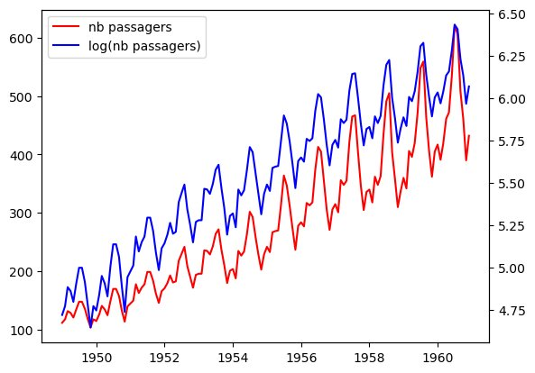

Prévision de Données Temporelles — Transport Aérien Eurostat

🔍 AgrandirCadre du projet & Objectifs
Modélisation et prévision de séries temporelles sur le transport aérien de passagers avec données Eurostat. Anticiper l'évolution post-COVID du trafic avec des modèles Holt-Winters sous R Studio.
Étapes de réalisation
Exploration des séries
Décomposition (tendance, saisonnalité, résidus), analyse visuelle des patterns, identification des ruptures COVID.
Modélisation Holt-Winters
Ajustement du modèle triple exponential smoothing pour capter tendance et saisonnalité multiplicative.
Évaluation & interprétation
Comparaison prévisions vs données réelles post-COVID. Analyse des intervalles de confiance pour quantifier l'incertitude.
Ce que j'en retire
Le COVID comme cas d'école sur les ruptures structurelles
Les modèles temporels présupposent la continuité des tendances passées. Le COVID a mis en échec tous les modèles calibrés avant 2020 — une leçon sur les limites fondamentales de la prévision.
💡 Ce que j'ai retenu
Communiquer l'incertitude associée à une prévision est tout aussi important que la prévision elle-même. Les intervalles de confiance ne sont pas optionnels.
Positionnement par rapport aux ACs
| Apprentissage Critique | Statut | Commentaires |
|---|---|---|
| AC22.02 Saisir la spécificité de l'analyse des données temporelles |
A | Modèles Holt-Winters utilisés pour isoler correctement tendance et saisonnalité dans les séries de passagers. |
| AC22.04 Appréhender l'idée de confronter une hypothèse avec la réalité pour prendre une décision |
A | Comparaison systématique prévisions/données réelles post-COVID pour valider ou invalider les résultats. |
| AC22.05 Apprécier les limites de validité et les conditions d'application d'une analyse |
P | Application correcte des modèles ; interprétation des intervalles de confiance et communication des limites à approfondir. |